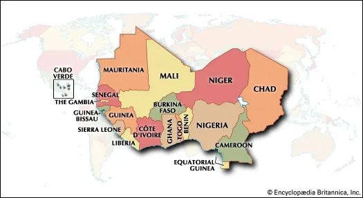
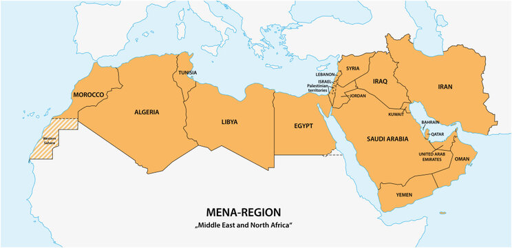
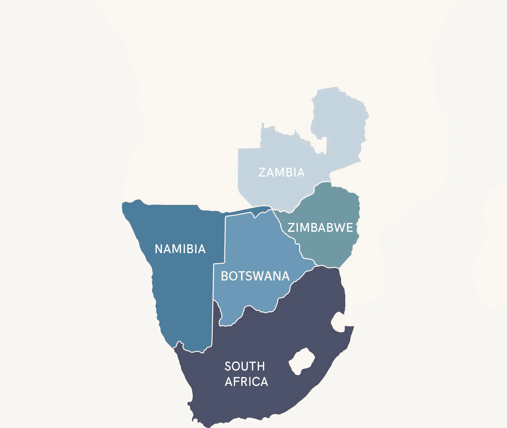

West Africa
Known for hearty stews, rice dishes like Jollof, and spicy grilled meats like Suya. Countries include Nigeria, Ghana, and Senegal.
Explore West AfricaAfrica is home to diverse culinary traditions, with each region offering unique flavors, ingredients, and iconic dishes. Explore the different regions below to discover their popular foods and recipes.

Known for hearty stews, rice dishes like Jollof, and spicy grilled meats like Suya. Countries include Nigeria, Ghana, and Senegal.
Explore West Africa
Famous for maize-based staples like Ugali, hearty stews, and dishes influenced by Indian and Arab cuisine. Countries include Kenya, Tanzania, and Uganda.
Explore East Africa
Features aromatic spices, couscous, tagines, and flatbreads. Countries include Morocco, Egypt, and Tunisia.
Explore North Africa
Known for grilled meats, maize-based dishes, and hearty stews. Countries include South Africa, Zambia, and Zimbabwe.
Explore Southern Africa